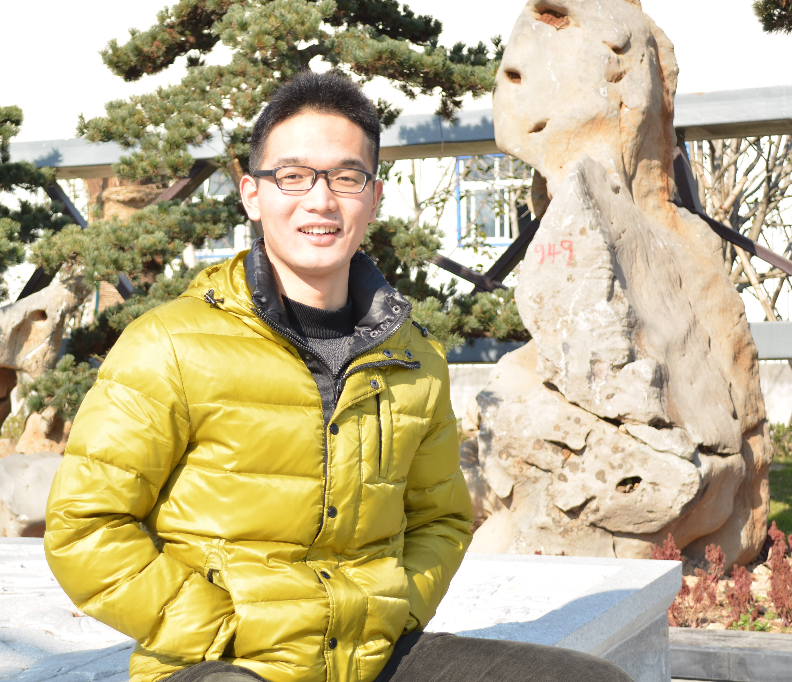

|  |
Yu Chen, PhD Candidate
Department of Computer Science, Rensselaer Polytechnic Institute, 110 8th St, Troy, NY 12180, USA. This site is mirrored at: |
The philosophers have only interpreted the world in various ways; the point is to change it. -- Karl Marx
Short Bio
Yu Chen is a PhD candidate in the Computer Science Department of Rensselaer Polytechnic Institute, under the supervision of Dr. Mohammed J. Zaki. He is also closely collaborating with Dr. Lingfei Wu from IBM Research. His research interests lie at the intersection of Machine Learning (Deep Learning), Data Mining, and Natural Language Processing, with a particular emphasis on the fast-growing subjects of Graph Neural Networks and their applications in various domains. His thesis topic is on designing and developing novel deep learning approaches for question answering and generation from structured and unstructured data. His work has been published in top-ranked conferences including but not limited to NeurIPS, ICML, ICLR, AAAI, NAACL, KDD, and ISWC. He was the recipient of the Best Student Paper Award of AAAI DLGMA’20. He is also a co-inventor of 4 filed (or to be filed) US patents.
Previously, He earned his bachelor's degree in Telecommunications Engineering from the University of Electronic Science and Technology of China (UESTC) in Chengdu, China. In that short but cherished period of time, he exposed himself to programming, data science and all kinds of cool techniques. The great research experiences with Prof. Tao Zhou and Prof. Jie Shen encouraged him to continue his research dream here at RPI.
In his spare time, he enjoy reading, writing, music, movie and photography. All of them make him discover and enjoy the beauty. He also likes to play sports. Soccer, badminton, tennis and pingpong are all nice.
What's new
[2020/2] Our paper on graph learning for GNNs received the Best Student Paper Award of AAAI DLGMA 2020.
[2019/12] One paper is accepted by ICLR 2020 and I will attend the conference in Addis Ababa, Ethiopia.
[2019/12] One paper is accepted by AAAI DLGMA 2020 and I will attend the conference in New York, NY.
[2019/11] I am invited to give a talk on Graph Learning at IBM Research in Yorktown Heights, NY.
[2019/10] One paper is accepted by AMIA KRSWG 2019.
[2019/10] One paper is accepted by NeurIPS GRL 2019 and I will attend the conference in Vancouver, BC, Canada.
[2019/07] Two papers are accepted by ISWC 2019.
[2019/05] One paper is accepted by ICML LRG 2019 and I will attend the conference in Long Beach, CA.
[2019/05] I am invited to give a talk on KBQA for adaptive education at AIAED 2019 in Beijing, China.
[2019/05] I am invited to give a talk on our KBQA work at IBM AI Horizons Seminar Series.
[2019/04] One journal paper is accepted by IJPEM.
[2019/02] One long paper is accepted by NAACL-HLT 2019 and I will attend the conference in Minneapolis, MN.
[2017/09] One paper is accepted by IEEE SSCI 2017.
[2017/07] I received the SIGKDD 2017 student travel award.
[2017/05] One full paper is accepted by SIGKDD'17 and I will attend the conference in Halifax, NS, Canada.
[2017/01] I am the TA for CSCI-4220: Network Programming, Spring 2017.
[2016/08] I am the TA for CSCI-4390/6390: Data Mining, Fall 2016.
[2016/05] One paper is accepted by CAD 2016.
[2016/02] I begin to work with Prof. Mohammed J. Zaki.
[2016/01] I am the TA for CSCI-2500 Computer Organization, Spring 2016.
[2015/08] I am the TA for ECSE-4750 Computer Graphics, Fall 2015.
[2015/08] I Join RPI as a PhD student in Computer Science.